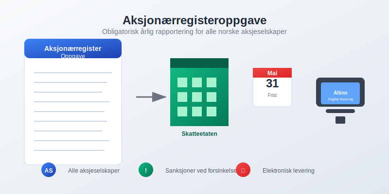
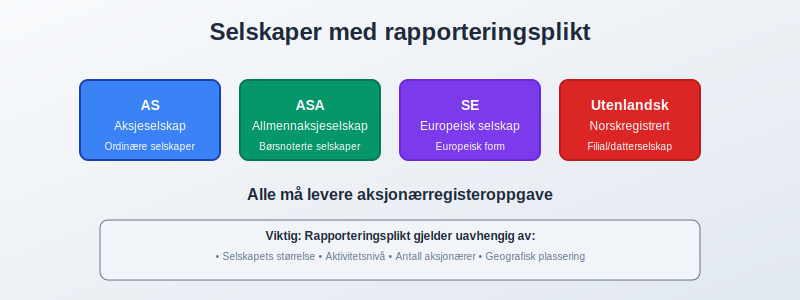
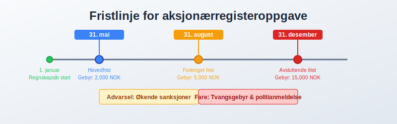
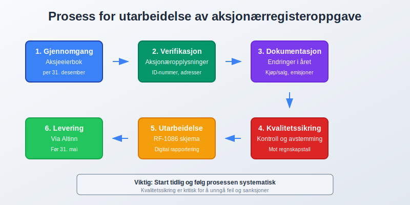
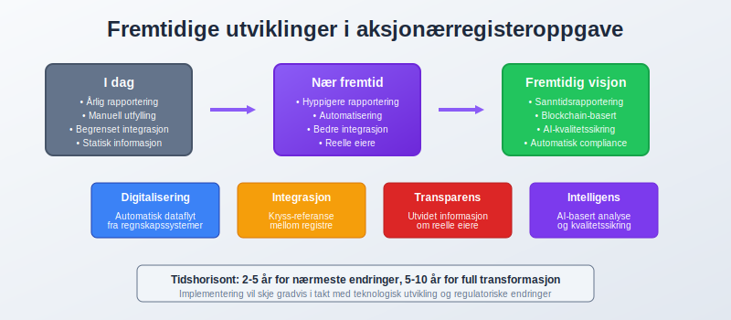
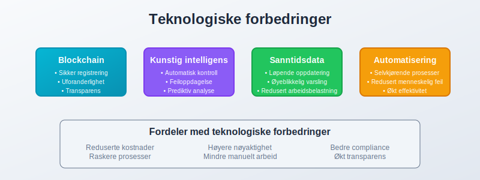

Aksjonærregisteroppgave er en obligatorisk årlig rapportering som alle norske aksjeselskaper må sende til Skatteetaten innen 31. mai hvert år. Denne oppgaven inneholder detaljert informasjon om selskapets aksjeeierstruktur, aksjonærer og aksjer, og er en kritisk del av skattekontroll og selskapsregisterføring i Norge.

Hva er aksjonærregisteroppgave?
Aksjonærregisteroppgave er en formell rapport som gir myndighetene fullstendig oversikt over eierstrukturen i norske aksjeselskaper. Oppgaven skal reflektere situasjonen per 31. desember foregående år og må sendes elektronisk gjennom Altinn eller andre godkjente kanaler.
Formål og betydning
Hovedformålet med aksjonærregisteroppgaven er å:
- Sikre skattekontroll av aksjonærer og utbytteutbetalinger
- Overvåke eierstrukturer i norske selskaper
- Forebygge økonomisk kriminalitet og hvitvasking
- Støtte statistisk datainnsamling for økonomisk analyse
- Sikre transparens i det norske næringslivet
Hvem må levere aksjonærregisteroppgave?
Alle aksjeselskaper registrert i Norge har plikt til å levere aksjonærregisteroppgave, uansett størrelse eller aktivitetsnivå. Dette inkluderer:
Omfattede selskaper
- Ordinære aksjeselskaper (AS)
- Allmennaksjeselskaper (ASA)
- Europeiske aksjeselskaper (SE)
- Norskregistrerte utenlandske aksjeselskaper
Spesielle situasjoner
| Situasjon | Rapporteringsplikt | Merknad |
|---|---|---|
| Nyetablerte selskaper | Ja, fra stiftelsesåret | Gjelder selv om selskapet ikke har hatt aktivitet |
| Selskaper under avvikling | Ja, til avvikling er registrert | Må rapportere til siste regnskapsår |
| Datterselskaper | Ja, hver for seg | Konsernselskaper rapporterer individuelt |
| Dormant selskaper | Ja, hvis aksjer eksisterer | Ingen unntak for inaktive selskaper |

Innhold og krav til aksjonærregisteroppgave
Aksjonærinformasjon
Detaljert informasjon om hver aksjonær må inkluderes:
- Navn og adresse (for personlige aksjonærer)
- Organisasjonsnummer (for juridiske personer)
- Fødselsnummer eller D-nummer (for utenlandske personer)
- Bostedsland og skattemessig bosted
- Eierandel og stemmeandel per 31. desember
Aksjeinformasjon
For hver aksjeklasse må følgende oppgis:
- Aksjeklasse (A-aksjer, B-aksjer, osv.)
- Pålydende verdi per aksje
- Antall aksjer per aksjonær
- Stemmerettigheter knyttet til aksjene
- Spesielle rettigheter eller begrensninger
Endringer i aksjonærkretsen
Alle endringer i løpet av regnskapsåret må dokumenteres:
- Kjøp og salg av aksjer
- Emisjoner og nedsettelser av aksjekapital
- Splittelser og sammenslåinger av aksjer
- Arv og gave av aksjer
- Pantsettelser og andre sikkerhetsstillelser
Frister og leveringskanaler
Kritiske frister
| Frist | Oppgave | Konsekvens ved forsinkelse |
|---|---|---|
| 31. mai | Hovedfrist for levering | Gebyr og oppfølging |
| 31. august | Siste frist etter forlengelse | Høyere gebyr |
| 31. desember | Avsluttende frist | Tvangsgebyr og sanksjoner |
Leveringsmåter
Elektronisk levering er obligatorisk:
- Altinn (mest brukte kanal)
- Godkjente regnskapsystemer med direkteintegrasjon
- Fullmaktshaveres systemer (autoriserte regnskapsførere)

Relasjon til andre regnskapsplikter
Sammenheng med årsoppgaven
Aksjonærregisteroppgaven er tett knyttet til årsoppgaven:
- Utbytteinformasjon må stemme med regnskapstall
- Aksjonærendringer må reflekteres i begge oppgaver
- Skattemessige konsekvenser for både selskap og aksjonærer
Forbindelse til aksjeeierboken
Aksjeeierboken er grunnlaget for aksjonærregisteroppgaven:
- Konsistens mellom aksjeeierbok og rapportering
- Oppdateringer må gjøres løpende gjennom året
- Dokumentasjon av alle endringer er påkrevd
Sanksjoner og konsekvenser ved manglende levering
Gebyrstruktur
Trinnvis gebyrordning ved forsinket levering:
| Forsinkelse | Gebyr | Tilleggstiltak |
|---|---|---|
| 1-60 dager | 2,000 NOK | Purring fra Skatteetaten |
| 61-120 dager | 5,000 NOK | Formell oppfølging |
| 121-180 dager | 10,000 NOK | Tvangsmulkt |
| Over 180 dager | 15,000 NOK | Ytterligere sanksjoner |
Ytterligere konsekvenser
- Tvangsgebyr kan påløpe månedlig
- Politianmeldelse ved gjentatte brudd
- Registrering i offentlige registre
- Påvirkning på selskapets kredittverdighet
Praktisk gjennomføring
Forberedelse og datainnsamling
Systematisk tilnærming til datainnsamling:
- Gjennomgang av aksjeeierbok per 31. desember
- Verifikasjon av alle aksjonæropplysninger
- Dokumentasjon av endringer i året
- Kontroll av stemmerettigheter og spesielle rettigheter
Kvalitetssikring
Kritiske kontrollpunkter:
- Summering av alle aksjer mot aksjekapital
- Verifikasjon av organisasjonsnummer og fødselsnummer
- Kontroll av utenlandske aksjonærer
- Avstemming mot regnskapstall

Spesielle utfordringer og løsninger
Utenlandske aksjonærer
Særskilte krav for utenlandske aksjonærer:
- Identifikasjon gjennom D-nummer eller tilsvarende
- Skattemessig bosted må oppgis korrekt
- Skatteavtaler kan påvirke rapportering
- Dokumentasjon av identitet kan være krevende
Komplekse eierstrukturer
Ved komplekse eierstrukturer må følgende vurderes:
- Indirekte eierskap gjennom holdingselskaper
- Nominee-strukturer og forvaltning
- Trust-strukturer og stiftelser
- Samboerskap og ekteskapelig felleseie
Aksjeklasser og stemmerettigheter
Forskjellige aksjeklasser krever nøyaktig rapportering:
- A-aksjer og B-aksjer med ulike stemmerettigheter
- Preferanseaksjer med særlige rettigheter
- Ansatteaksjer med spesielle begrensninger
- Warrants og opsjoner under etablering
Digitalisering og automatisering
Moderne løsninger
Teknologiske forbedringer letter rapporteringen:
- Automatisk dataoverføring fra regnskapssystemer
- Integrert kvalitetskontroll i rapporteringssystemer
- Varslingssystemer for frister og endringer
- Sanntidsoppdatering av aksjonærinformasjon
Fremtidige utviklinger
Forventede endringer i rapporteringskrav:
- Hyppigere rapportering av endringer
- Utvidet informasjon om reelle eiere
- Integrasjon med Aksjonærregisteret
- Automatisert cross-referanse mellom registre

Rollen til profesjonelle tjenesteyterne
Autoriserte regnskapsførere
Autoriserte regnskapsførere kan bistå med:
- Utarbeidelse av aksjonærregisteroppgave
- Kvalitetssikring av data
- Elektronisk levering på vegne av selskapet
- Oppfølging av frister og endringer
Revisorer og jurister
Spesialiserte tjenesteyterne bidrar med:
- Komplekse eierstrukturer og internasjonale forhold
- Rettslig veiledning ved usikkerhet
- Skattemessig optimalisering av eierstrukturer
- Compliance med endrede regelverk
Internasjonale aspekter
Skatteavtaler og dobbeltbeskatning
Utenlandske aksjonærer må vurdere:
- Skatteavtaler mellom Norge og hjemlandet
- Kildeskatt på utbytte og gevinster
- Dokumentasjon av skattemessig bosted
- Refusjon av overskytende skatt
Rapportering til hjemland
Tilleggskrav for utenlandske aksjonærer:
- CRS-rapportering (Common Reporting Standard)
- FATCA-krav for amerikanske aksjonærer
- Nasjonale rapporteringskrav i hjemlandet
- Dokumentasjon av norsk aksjebesittelse
Sammenheng med andre selskapsformer
Sammenligning med andre foretak
| Selskapsform | Rapporteringsplikt | Sammenligning |
|---|---|---|
| Enkeltpersonforetak | Ingen aksjonærregisteroppgave | Enklere rapportering |
| Ansvarlige selskaper | Deltakerrapportering | Lignende, men ikke identisk |
| Allmennaksjeselskaper | Utvidet rapportering | Strengere krav |
| Stiftelser | Ingen aksjonærregisteroppgave | Annen regulering |
Særlige hensyn for konsern
Konsernstrukturer krever ekstra oppmerksomhet:
- Hver enhet rapporterer individuelt
- Konsern-interne eierskap må dokumenteres
- Eliminering av double-counting
- Konsolidering på konsernnivå
Nye krav og regelverksendringer 2024-2025
Styrket UBO-rapportering (Ultimate Beneficial Owner)
Nye krav for identifisering av reelle eiere trer i kraft:
- Dokumentasjon av alle eiere med mer enn 25% eierandel
- Rapportering av kontrollstrukturer og stemmerettigheter
- Vedlegg med detaljerte eierstrukturdiagrammer
- Kryss-referanse mot UBO-registeret
Digitalisering og automatisering
Nye teknologiske krav fra 2024:
- Strukturert dataformat (XML/JSON) obligatorisk for store selskaper
- API-integrasjon for automatisert rapportering
- Sanntidsvalidering mot Brønnøysundregisteret
- Elektronisk signatur påkrevd for alle innsendelser
Utvidet informasjonskrav
Tilleggsinformasjon som nå må rapporteres:
| Nytt krav | Beskrivelse | Gjelder fra |
|---|---|---|
| Skattemessig bosted | Detaljert informasjon for alle utenlandske aksjonærer | 1. januar 2024 |
| Kontrollmekanismer | Dokumentasjon av stemmerettigheter og kontroll | 1. mai 2024 |
| Transaksjonshistorikk | Alle endringer i løpet av året med datoer | 1. januar 2025 |
| Relaterte parter | Forbindelser mellom aksjonærer og selskap | 1. mai 2025 |
Fremtidige endringer og utvikling
Forventede regelverksendringer
Kommende endringer i rapporteringskrav:
- Utvidet informasjon om reelle eiere
- Hyppigere rapportering av endringer
- Automatisert verifikasjon mot andre registre
- Integrasjon med europeiske systemer
Teknologiske forbedringer
Nye teknologier vil påvirke rapporteringen:
- Blockchain-baserte aksjeregistre
- Kunstig intelligens for kvalitetskontroll
- Sanntidsrapportering av endringer
- Automatisert compliance-sjekk

Praktiske tips for bedriftsledere
Forberedelse gjennom året
Løpende forberedelse sikrer smidig rapportering:
- Oppdater aksjeeierbok ved alle endringer
- Dokumenter alle aksjetransaksjoner
- Verifiser aksjonærinformasjon regelmessig
- Forbered rapportering tidlig i året
Sjekkliste for aksjonærregisteroppgave
Månedlig oppfølging (anbefalt):
- ✅ Kontroller at alle aksjeendringer er registrert
- ✅ Verifiser kontaktinformasjon for aksjonærer
- ✅ Dokumenter alle transaksjoner med dato og beløp
- ✅ Oppdater stemmerettigheter ved endringer
Kvartalsvis gjennomgang:
- ✅ Avstem aksjekapital mot regnskapstall
- ✅ Kontroller utenlandske aksjonærer sitt skattemessige bosted
- ✅ Gjennomgå alle endringer i aksjeklasser
- ✅ Forbered dokumentasjon for komplekse strukturer
Før 31. mai deadline:
- ✅ Fullfør kvalitetssikring av alle data
- ✅ Test elektronisk innleveringssystem
- ✅ Forbered eventuelle vedlegg og tilleggsopplysninger
- ✅ Lever oppgaven minst 1 uke før fristen
Kvalitetssikring
Kritiske kontrollpunkter:
- Avstemming mot regnskapstall
- Verifikasjon av identitetsopplysninger
- Kontroll av stemmerettigheter
- Gjennomgang av endringer i året
Feilkilder og hvordan unngå dem
Vanlige feil og forebyggende tiltak:
- Feil aksjonærinformasjon: Regelmessig verifikasjon
- Manglende endringer: Systematisk oppfølging
- Feil datering: Konsistent bruk av 31. desember
- Forsinkelse: Tidlig påbegynnelse av arbeidet
Vanlige utfordringer og løsninger
Typiske problemer og hvordan løse dem:
| Problem | Løsning | Forebygging |
|---|---|---|
| Manglende D-nummer for utenlandske aksjonærer | Kontakt Skatteetaten for tildeling | Søk om D-nummer ved aksjetegning |
| Ukorrekt organisasjonsnummer | Verifiser mot Brønnøysundregisteret | Automatisk validering i systemer |
| Feil stemmerettigheter | Gjennomgå vedtekter | Oppdater ved endringer i vedtekter |
| Manglende dokumentasjon | Systematisk arkivering av alle endringer | Digitalt aksjeregister med loggføring |
| Tekniske problemer ved levering | Test systemet før deadline | Lever tidlig, ha backup-plan |
Praktiske eksempler
Eksempel 1: Nyetablert selskap Et selskap stiftet i oktober 2023 må levere aksjonærregisteroppgave innen 31. mai 2024, selv om det ikke har hatt virksomhet.
Eksempel 2: Aksjesalg i desember Aksjer solgt 20. desember 2023 må rapporteres med ny eier per 31. desember 2023, ikke den gamle eieren.
Eksempel 3: Utenlandsk aksjonær En tysk aksjonær må oppgi tysk skattemessig bosted, ikke norsk adresse, selv om vedkommende har midlertidig opphold i Norge.
Kostnader og ressurser
Interne kostnader
Estimerte kostnader for intern håndtering:
| Aktivitet | Timesforbruk | Kostnad (ved 1,000 NOK/time) |
|---|---|---|
| Datainnsamling | 2-4 timer | 2,000-4,000 NOK |
| Kvalitetssikring | 1-2 timer | 1,000-2,000 NOK |
| Rapportering | 1-2 timer | 1,000-2,000 NOK |
| Oppfølging | 0.5-1 time | 500-1,000 NOK |
Eksterne kostnader
Kostnader ved bruk av externe tjenester:
| Tjeneste | Kostnad | Fordeler |
|---|---|---|
| Regnskapsfører | 3,000-8,000 NOK | Profesjonell håndtering |
| Rådgiver | 5,000-15,000 NOK | Komplekse strukturer |
| Systemleverandør | 2,000-5,000 NOK | Automatisering |
Relaterte artikler og ressurser
Aksjeselskap og eierstruktur
Rapportering og compliance
Aksjer og kapital
Skatt og regnskap
Juridiske aspekter
Konklusjon
Aksjonærregisteroppgave er en kritisk compliance-oppgave som alle norske aksjeselskaper må håndtere profesjonelt. Ved å forstå kravene, forberede seg systematisk og sikre nøyaktig rapportering kan selskaper unngå kostbare sanksjoner og bidra til transparens i norsk næringsliv.
Nøkkelfaktorene for vellykket håndtering er:
- Tidlig forberedelse og systematisk datainnsamling
- Løpende oppdatering av aksjeeierbok gjennom året
- Profesjonell kvalitetssikring før levering
- Automatisering der mulig for å redusere feil
- Samarbeid med qualifiserte rådgivere ved komplekse strukturer
Investering i gode rutiner og profesjonelle systemer for aksjonærregisteroppgave betaler seg gjennom reduserte risikoinvesteringer og smidigere rapportering over tid.